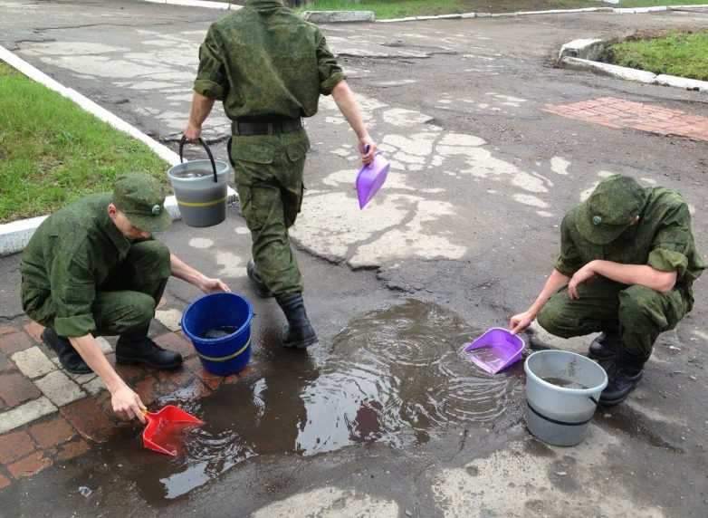
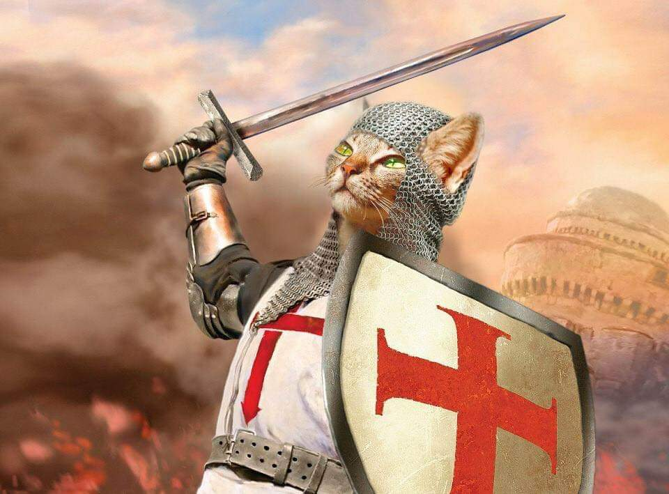

 25 февраля 1937 года Тиббетса зачислили в Военно-воздушные силы Сухопутных войск США (англ. USAAF) курсантом в городе Форт Томас штата Кентукки, откуда он выпустился в 1938 году в звании второй лейтенант, после чего стал пилотом на авиабазе Келли-Филд (Kelly Air Force Base) в штате Техас. В марте 1942 Тиббетс стал командующим офицером 340-й бомбардировочной эскадрильи 97-й группы тяжёлых бомбардировщиков, где на вооружении стояли Boeing B-17 Flying Fortress и которая базировалась на британской авиабазе Поулбрук (RAF Polebrook). Он пилотировал ведущий бомбардировщик в первой миссии 8-й Воздушной армии США в Европе 17 августа 1942 года, а позже участвовал в военных операциях на средиземноморском театре военных действий до того, как вернулся в США, чтобы участвовать в тестовых полетах Boeing B-29 Superfortress. Тиббетс имел репутацию «лучшего пилота в Военно-воздушных силах»[1]. Одним из тех, кто это подтверждал, был Дуайт Дэвид Эйзенхауэр, у которого Тиббетс работал личным пилотом в годы войны. В сентябре 1944 года Тиббетс был назначен командиром созданного элитного 509-го смешанного авиационного полка. Полк выполнял задания по транспортировке компонентов и самого ядерного оружия в Проекте Альберта Манхэттенского проекта, дислоцировавшемся на авиабазе Уэндовер (Wendover Army Air Field) штата Юта[2] и авиабазе Розуэлл в штате Нью-Мексико. 5 августа 1945 года Тиббетс назвал B-29 c серийным номером 44-86292 «Энола Гей» в честь матери, которая сама получила своё имя в честь Энолы — героини любимого романа её отца. 6 августа в 2:45 ночи бомбардировщик «Энола Гей» направился с острова Тиниан Марианских островов в направлении Хиросимы, неся на своем борту атомную бомбу с кодовым названием «Малыш». Бомба была сброшена на Хиросиму в 8:15 утра по местному времени, в результате чего порядка 140 000 человек были убиты и многие умерли позже. В фильме «Above and Beyond» (1952) показаны эти события Второй мировой войны с участием Роберта Тейлора в роли Тиббетса и Элеоноры Паркер в роли первой жены Тиббетса — Люси. В 1980 году на телеэкраны вышла новая картина с участием Патрика Даффи в роли Тиббетса и Ким Дарби в роли Люси, пересказывающая историю с ещё меньшей опорой на реальные факты. Фильм носил название «Enola Gay: The Men, the Mission, the Atomic Bomb». Персона Тиббетса так же присутствует в фильмах «День первый» («Day One») и «The Beginning or the End». Брак Тиббетса с Люси Вингейт закончился разводом в 1955 году[3]; его вторую жену звали Андрэа. В 1959 году он получил звание бригадного генерала. На пенсию из армии он ушёл 21 августа 1966 года. Был радиолюбителем, имел позывной K4ZVZ[4].
В 1960-х годах Тиббетса назначили военным атташе в Индию, но это назначение было аннулировано после серии протестов. После выхода на пенсию он работал на Executive Jet Aviation — компанию воздушного такси в Колумбусе, штат Огайо, которая в настоящее время называется NetJets. Оттуда он уволился в 1970 году и вернулся в Майами, штат Флорида. Позже, продав свой дом в Майами, он снова вернулся в компанию в 1974 году[5]. С 1976 года Пол стал президентом компании и пробыл на этой должности вплоть до выхода на пенсию в 1987 году. Правительство США принесло извинения Японии в 1976 году после того, как Тиббетс сделал полную постановку событий бомбёжки Хиросимы на воздушном шоу в Техасе, включая ядерное облако («ядерный гриб»). Тиббетс сказал, что в его намерениях не было оскорбить японцев[6]. В 1995 году он назвал «чертовски большим оскорблением» запланированную выставку «Энолы Гей» в Смитсоновском институте, приуроченную к её 50-й годовщине, которая пыталась представить бомбёжку Хиросимы без надлежащего контекста. В фильме 1982 года «Atomic Cafe» можно увидеть интервью с Тиббетсом. Также его интервью 1970-х годов можно посмотреть в британском документальном сериале «The World at War». Его внук Пол У. Тиббетс IV на 2006 год являлся командиром 393-й бомбардировочной эскадрильи и пилотом B-2 Spirit. 393-я — одна из двух эскадрилий того же крыла (509-го бомбардировочного), которым командовал его дед. Тиббетс не испытывал сожалений по поводу решения сбросить бомбу. В интервью 1975 года он сказал: «Я горд, что был способен, начав с ничего, распланировать операцию и привести её в исполнение так безукоризненно, как я сделал… Я сплю спокойно каждую ночь»[6]. В марте 2005 он заявил: «Если вы поставите меня в такую же ситуацию, то да, чёрт побери, я сделаю это снова»[7].
 Тиббетс умер в своём доме в Колумбусе штата Огайо в 2007 году[6][8][9]. Последние годы перед смертью у него были серия микроинсультов и сердечная недостаточность[10][11]. В своём завещании Тиббетс написал, чтобы после смерти не устраивали похорон и не устанавливали мемориальной плиты, так как демонстранты, выступающие против ядерного оружия, могли сделать её своеобразным местом своих протестов. Также он завещал, чтобы его кремировали и его прах развеяли над Ла-Маншем.
| Как | же | сложно | Что-то |
| Придумывать | 0_о | ||
| Ответ: ничего хорошего) | Ладно, надо исправить это безобразие | ||
| Просто добавил это, чтобы было, чтобы таблица казалась большой | |||